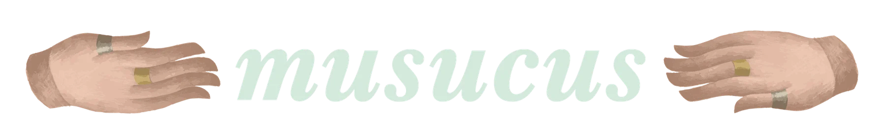
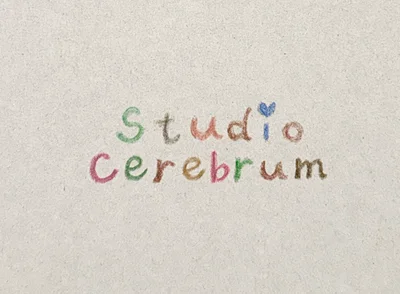
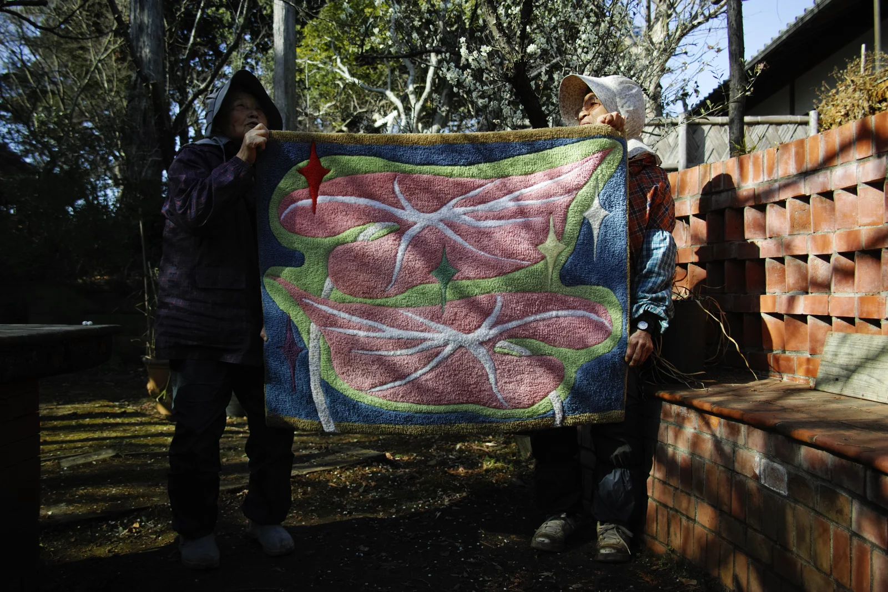
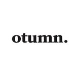

musucus
Colour, form, and the feeling of yarn.
Handmade rugs from a practice dedicated to texture, form and the feeling of a room.
Visit the musucus shop ↗
Art · Objects · Editions
A meeting place for things made with thought, feeling and a pair of hands.
Explore selected works ↗STUDIO CEREBRUM / 01
01 / The selection
A first look at the studio’s work.
Open a piece to discover more.
02 / In the company of

Colour, form, and the feeling of yarn.
Handmade rugs from a practice dedicated to texture, form and the feeling of a room.
Visit the musucus shop ↗
More than a candle.
A candle project exploring stories, traditional ceramics and the life of objects. Discover otumn’s work and latest news on Instagram.
Discover otumn. · @otumn_ ↗03 / From the studio
A publication can carry a place, a process and a question. Our work moves between the printed page and the things we can hold.
04 / A shared practice
Studio Cerebrum is a shared practice by two artists, working across publications, textiles and small objects. It begins with the things we make, and grows through the things we are drawn to.
Contact us on Instagram ↗